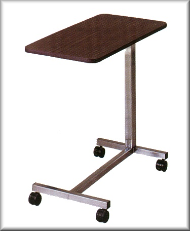
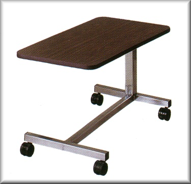
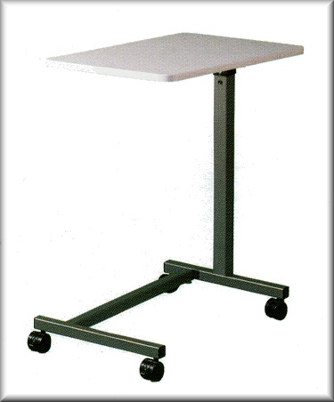

Standard H-Base, Overbed Table
- Funcionalidade: Ajuste de altura fácil com molas. Base H de quatro pontos com dois rodízios duplos e bloqueio em nylon.
- Dimensões: Altura: 28.25" - 43.25"; Base: 15.25" x 26.38"; Topo: 15" x 31".
- Capacidade de Peso: 50 lbs.
- Montagem: Requer montagem.
- Modelos Disponíveis:
- 11600: Topo laminado cinza, base epóxi cinza - $192.73
- 11610: Topo laminado imitação nogueira, base cromada - $192.73

Low H-Base, Overbed Table
- Funcionalidade: Ajuste de altura fácil com molas. Base H de quatro pontos com dois rodízios duplos e bloqueio em nylon. Inclui rodízios de 1.75" e deslizadores plásticos.
- Dimensões: Altura com rodízios: 19.75" - 26.75"; Altura com deslizadores: 17.5" - 25.5"; Base: 15.25" x 26.38"; Topo: 15" x 31".
- Capacidade de Peso: 50 lbs.
- Montagem: Requer montagem.
- Modelos Disponíveis:
- 11640: Topo laminado imitação nogueira, base cromada - $172.73

U-Base, Overbed Table
- Funcionalidade: Base "U" para fácil ajuste em espaços restritos. Ajuste de altura fácil com molas. Base U de quatro pontos com dois rodízios duplos e bloqueio em nylon.
- Dimensões: Altura: 28.25" - 43.25"; Base: 15.25" x 26.38"; Topo: 15" x 31".
- Capacidade de Peso: 50 lbs.
- Montagem: Requer montagem.
- Modelos Disponíveis:
- 11620: Topo laminado imitação nogueira, base cromada - $192.73
- 11630: Topo laminado cinza, base epóxi cinza - $192.73